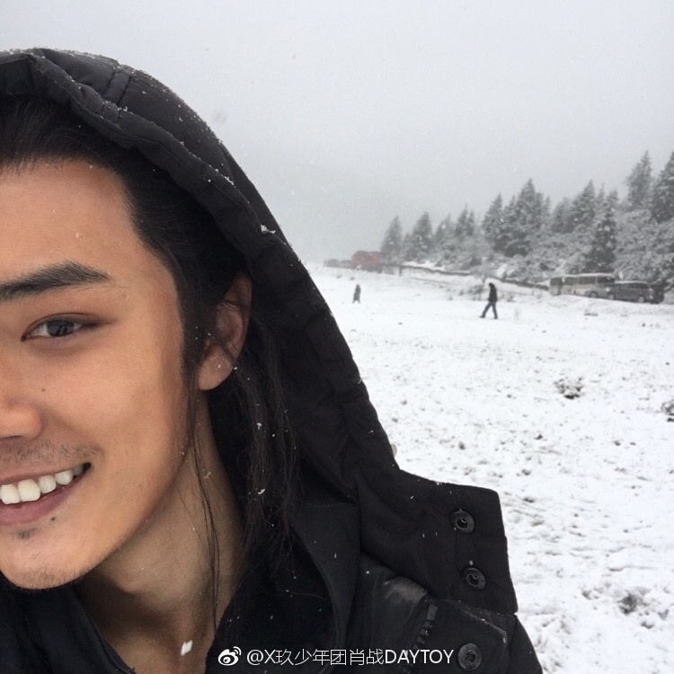

他拍小方的时候，还没出道。那个时候刚刚结束比赛（《燃烧吧！少年》），16年的2月过完年，4月份的时候就去剧组拍摄了（《超星星学园》）。 所以说，《超星星》应该算是一个演员小白的演戏初体验吧。虽然是现代戏，也没有那么多的武打动作，但是他还是学到了好多东西。 其实《超星星》虽然是一部网剧，但是也算是他第一次正式的进剧组去体验学习，所以那几个月里他一直在剧组里很努力提升自我。而且很多花絮都能看到拍戏的间隙，他悄悄地躲在角落里抱着剧本研读，因为他作为男主角，拍摄体量是非常大的，所以花絮里也偶尔会有让人心疼的发现。他可能太累了，有时候两场戏的间隙，他头发上还夹着定妆的小夹子，剧本还在手边，他就不知觉的靠在椅子上睡着了。 而且，正是因为他戏份非常多，所以，有很多时候别人结束拍摄已经回去休息了，他还在剧组里等着拍自己的戏份。就明明上一秒，你看见他已经困到睁不开眼睛，但是下一秒只要有一个开拍的口令，他就会马上恢复状态，投入自己的角色。那个时候，他虽然只是第一次拍戏，可能现在回想来看好像也有些青涩，但是他就是从那个时候开始慢慢在学习去做一个演员，然后也是那个时候开始第一次学习把自己放入角色，去感悟也许（《超星星学园》中饰演方天泽，小名也许）的人生。 可能说《超星星》不是他最优秀的作品，大家也经常开玩笑说方小胖要减肥啦之类的话语，但是如果把时间倒回到那个时候，他确实也有让人眼前一亮的地方。 后来，拍完《超星星》后，他就开始准备出道啦。8月放预告的时候，当时的一个预告是每天一颗蛋蛋，然后蛋蛋有每个人的特征。有一天，大家发现8号小朋友，拿着画笔，露出了两颗兔牙。大家就猜到了，这应该就是他了。 那天，也是我们最爱的他25岁农历生日。 然后出道之后，紧接着就播出了《超星星学园》。 那年，也是他第一次以正式的艺人身份参加各种活动。 后来到了2017年，他先是进组拍摄了《斗破苍穹》，然后4月就进组《狼殿下》了。 其实《狼殿下》那个时候也很难。因为没有人认识他，基本大家都不知道他会去参加拍摄，所以，大家还是在官宣前，看到别人发的开机视频才确定，好像那个裹着羽绒服的真的是我们小兔呢。 《狼殿下》是17年的4月在香格里拉开机的，从香格里拉到贵州都匀再到浙江象山。开拍的时候是4月，那个时候虽然是春天了，但是香格里拉因为海拔比较高，然后他们拍摄的地方是在一个比香格里拉市区还要高海拔的一个山上。所以哪怕已经4月了，却还在下雪。而且他其实高原反应有点严重，每个人对于高反的表现不一样，他主要就是紫外线照射严重的话，眼睛会过敏发炎。 而且高反的话，人跑几步就会喘得很严重。七十人都是有惰性得呀，一般不舒服的时候都会想躺着。但是它必须要拍武打戏，也不愿意因为自己的愿意去耽误任何拍摄，就一直自己坚持，从来都不会因为个人原因请假。他真的不喜欢也不太希望因为自己请假。 后来，香格里拉天气有点升温了，他却又去了其他地方拍摄，可香格里拉温度刚刚合适的时候，其他地方已经到了夏天，又开始了暴晒。不知道怎么回事，他好像每次拍戏都碰到反季节呢。 而且说实话，《狼殿下》其实拍摄的困难是一方面，还有一方面是他自己内心很多想法都要一点一点去改变，他的采访里也说啦，自己其实那段时间真的是思考了很多，然后也有很多默默吃苦的日子，这些所有，他都只是轻描淡写，所以我们只能体会到其中的万分之一。 不过说到很直观的事情，应该就是粉丝的应援。其实《狼殿下》的剧组真的做的很棒。但是应援之前，后院会做集资，一个月连几万都集不够，参与人数只有几百。 还好现在都过去了。 每次提到这些，大家都会很难过，总想安慰大家都过去了，但是有时候自己都说服不了自己，感觉自己为什么那时候不知道为他多付出一些呢。所以，只能希望以后别那么难了。 后来《狼殿下》杀青那天，他发了一个短短的视频，视频里，是大家送给他的花。 后来拍完《狼殿下》以后，他真的是无缝进组了《皇帝殿下》（《哦！我的皇帝陛下》）。第一天拍完《狼殿下》最后一场戏，第二天就赶行程，进了《皇帝殿下》的组。而且当时《皇帝殿下》其实其他人已经拍了有一段时间了。虽然他只是男三号，但是戏份也确实比较重，所以他进组的时候有很多落下的戏要去赶进度，所以他连着拍了好几个通宵。当时也是因为眼睛没有充足休息，所以又跟着红了…… 不过，从《超星星》到《狼殿下》，再到《皇帝陛下》，细心观察，就完全可以发现，他的演技真的有在进步。他一直都在努力的上表演课，上台词课。虽然他有工作不太密集的时候，但是他一直在进步，从来没有懈怠过。突然想起很久以前的一个采访问他，你的生活怎么过：他说自己就是学习上课，然后健身做晚餐。想来好笑，就像是记录了流水账的一天。但是想来也是很难过，那都是隐藏在轻描淡写里籍籍无名的过去和不为人知的努力。 后来《皇帝陛下》拍完以后已经是很冷的冬天了。他做完了其他的工作，就回家过了一个短短的年，然后回来和大家一起录了新的歌曲，去韩国和日本分别拍了MV。4月中旬，就进组《陈情令》了。 严格意义上说，那应该是他第一次在横店拍戏吧。从4月进组辗转了很多地方，才有了今天的阿令。而且横店和香格里拉不一样，香格里拉4月飘雪，横店4月却已经开始有点晒了，到了5月中旬，横店就入夏了……而且阿羡的衣服都是很厚实的那种，里三层外三层，而且裹得很严实，他本人是“汉堡包”体质，甚至有时候还没开始拍，妆就掉了…… 后来阿令拍摄的过程中，总共拍了130多天，其中真的有过许许多多的困难，他不小心手臂受伤，然后自己去医院检查，这件事情他好像从来都没提起过，哪怕到了今天，他还是没有说起。然后吊威亚吊一整天，结束还会很乖巧地跟大家鞠躬说谢谢各位老师，大家辛苦了。 他会在剧组送给其他演员小风扇，也会给工作人员送饮料，对粉丝也始终抱有最大的善意去尊重保护。 他不喜欢讲这些，大家都是后来才知道。 阿令拍的时候，他们有一场在水里的戏。那个水潭是人工做的，就一开始拍的时候水还很清澈，但是剧组的戏都是穿插拍摄的。后来再拍到那里，水就真的已经很脏了，可是他还是该埋头进去就埋头进去，该蹲下就蹲下，也从不说什么很苦。知道后来其他人采访中提起，才说道：哈哈哈哈那个水后来都已经有味道了！他一般不太把这样的事放在嘴上说，很多都被他藏在心里，哪怕被问到，都是后来才轻描淡写道：哦，那场拍的还挺苦的吧。 而且大家去考古过他的微博的人应该知道。他之前微博有一个视频，是穿着浴袍拍的，然后他说自己头发长长了。那段时间其实有很多关于剧组也好，关于他本人也罢的一些风言风语，有的粉丝会觉得很为他不平，也心疼着他。然后他那天其实就在水里泡了一整天，下戏发现了以后，上车后，自己悄悄爬上微博，发了视频给大家，配的文字是：你们要乖哦~ 《陈情令》的事情很多大家都在花絮里看到过啦，这样太多细节的事情，突然说要讲的时候，也不知道从哪里讲了。就只是想说，《陈情令》这部戏他付出特别特别多，拍不夜天的时候，真的全身心投入，哭得剧组所有人都为他心疼。而且拍了那么多天，他离组的天数一双手都可以数的过来。他从来没有任何时候因为自己的事情去耽误拍摄…… 就包括《庆余年》的拍摄，虽然是穿插在阿令中间拍摄的。但是其实也不是他轧戏或者怎么样，有时候舆论真的很可怕的，其实他那部戏签的比阿令早，年初就去参加了发布会，剧组其他人很早就开始拍摄了。而且每个剧组的拍摄都不会死按着时间线拍摄的。他拍摄《庆余年》的时候，都是利用自己没有戏的休息时间和可调整的一些时间去拍摄的。而且《庆余年》他虽然只是作为一个特别出演，他也不去划水或者敷衍，小言公子的性格和阿羡完全不同，但是他还是努力切换自己的角色，去努力适应每个人物。 不过在《诛仙》之前，他先是给大家准备了单曲《满足》，然后就是1004的杭州演唱会啦，再接着和大家一起度过了自己的27岁生日。 那是第一次，所有人为了他走到一起，然后给了他一片红海。 那天第一次听到那首歌的时候，真的很感触，大家都哭得稀里哗啦的。 到现在那个夜晚都还是那么值得人记得。 总是会在公开场合，和他体面地见面的。 《诛仙》开拍的时候，已经到了秋冬季节。那个时候，北京的天气已经开始变冷了。又想说啦，我们崽真的总是很不凑巧，阿令的衣服里三层外三层，夏天真的特别特别。而《诛仙》的衣服偏偏烂糟糟的，结果反而是冬天拍摄，真的很冷。 那个时候，北京的天气已经开始转冷，然后拍摄又在山里，毫不夸张地说，真的是拍着拍着，河里的水就流动到结冰了。 而且他之前微博发过一只自己的脚脚，就是拍《诛仙》时，张小凡的鞋子，可是他还开玩笑说什么：冬日恋歌，穿秋裤都是爱你们的形状。 而且那时候大家都很担心他，怕他身体受不住，可是他还是跑来安慰大家。就去年冬天的时候。大家看到自己家下雪了，一边艾特他看雪，一边去问他冷不冷，他怕大家担心，就发个微博：“有雪算什么！我有冰！” 这些其实最近的物料比较多，就其实大家也能看到当时，真的很冷。 他《诛仙》一部电影拍了两三个月，整个冬天，他都在剧组过了。因为信号不好，微博也更的不勤，但每次有现代公开的活动，他都会跑来说：今天我是现代人哦。我们就这样知道，他虽然暂时离开了剧组，但是也有好好工作。 所以《诛仙》真的是他付出了很多的一部作品。 想分享一句他的话：“一直都不喜欢刻意而为，只是觉得每一份喜欢都应该被认真对待。”这是他在秘密花园的话。 所以以后也好好相互保护，一起走吧。 我个人的话，其实不太经常说宠粉这样的词，因为我是觉得他对粉丝的好，不是种刻意而为吧。就是一种有原则的互相尊重。 最难的时候已经过去啦，我们现在就是要像他说的那样：手牵手的，好好走下去吧。 几句话 @木兮兮兒：他在任何条件下全力以赴做好自己能够做到的那份，他从不划水。 @YY_XPY：哥哥自己忍受寂寞孤独，却又享受着。他真的抓住时间努力。等着机遇来了好紧紧把握住。 @向黑夜借来笔墨：“这个世上一定有某种善良，值得我们奋战到底。”哥哥拥有这份独特的善良。 个人感受： 我是阿令完结之后才去看的，因为之前看过书，所以其实一开始对剧播没有太大的感觉。因为很少看剧，更别说追剧了。朋友向我推荐的时候没在意，却不成想，这却而成了我这么美好的记忆。 之前不是不认识他，我是快本忠实粉丝，团队上快本的时候，我眼前亮过，原谅我抗拒不了白衣翩翩的帅气男子，他也是我最理想的模样，但是说实话，那时的我看所有东西都好似过眼烟云，看过笑过，就过去了。此后的创造101，也不是没看，却也只不过看个热闹而已。 而现在的我，却被自己打脸了，推荐我看阿令的朋友嫌弃我的热忱，而我乐在其中。作为一个晚期追星少女，什么都是从头开始，什么都不会，什么都不懂。能做的就是慢慢跟着大部队走，亦步亦趋。 然后开始考古。 《燃烧吧！少年》的他，很明显的紧张，青涩，面对镜头的拍摄甚至会不知所措，但是不得不说的一句，颜值是真的高呀，呆呆萌萌的学长模样。 《X玖少年频道》的他，虽然镜头不是很多，大部分都是团体一起的镜头，但是每一帧都帅成了一幅画，截了很多的图私藏。 《超星星学园》的他，你们都说演技青涩，他甚至将这部剧列为黑历史，太可爱了。但是我觉得很亮眼呢，痞怪而又含蓄，隐忍却又温暖，是我喜欢的样子。 《陈情令》的他，想说的很多，却不知从何说起。阿羡的模样印入了多少人的眼中，藏在了多少人的心里，我不知道。但是因为这部剧爱上他的我，现在却失语了，都在心里。 他私底下是做了多少的功课，努力了多久才能提升这么快，其中的坚定与坚持我们无法体会，但是付出的效果我们都看到了。 “这个世上一定有某种善良，值得我们奋战到底。”哥哥拥有这份独特的善良。
文cr@向黑夜借来笔墨
